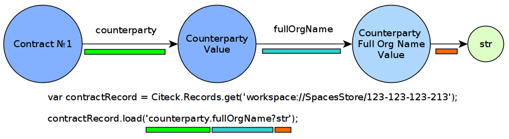

ECOS Records API
Содержание
Общее описание
API, разработанное для организации простого и легко масштабируемого общения между потребителем информации и источником. Источниками данных могут быть БД, alfresco, REST и др.
Преимущества:
Единый API для доступа к данным в системе для всех потребителей (Браузер, Мобильное приложение, Система построения отчетов, Индексирование данных, Различные микросервисы и т.д.);
Поддержка загрузки данных из связанных сущностей. Например, если у нас договор ссылается на доверенность, то, имея идентификатор договора, мы можем получить любой атрибут связанной доверенности;
Оптимальность. Загружаются и вычисляются только те атрибуты, которые нужны потребителю;
Простота в разработке – разработчик источника данных описывает все атрибуты, которые могут запросить потребители вне зависимости от сложности их вычисления. Потребитель в запросе указывает только те атрибуты, в которых он заинтересован;
Простота поддержки - нет версионирования API т.к. мы в любой момент можем добавлять новые атрибуты, не трогая старые;
Тип получаемых данных полностью описывается запросом. Из источника данных мы возвращаем атрибуты с любым типом, а Records API приводит их к нужному для потребителя;
Вычисляемые атрибуты. Возможность добавлять атрибуты, которые не хранятся в БД или любом другом хранилище, а вычисляются на основе существующих;
Поддержка объединения атрибутов из разных источников. Например, можно написать источник данных, который часть атрибутов будет брать из alfresco, а часть из внешней БД объединяя их по идентификатору.
Примечание
ECOS Records API - это НЕ GraphQL. Старые версии Records API использовали GraphQL, но начиная с версии 3.0 API полностью самостоятелен.
Термины
Общие:
Атрибут (Attribute) – свойство или ассоциация сущности;
Сущность (Entity) – некоторый объект в системе (договор, доверенность, человек, группа, форма и др.);
Запись (Record) – сущность с набором атрибутов и идентификатором записи (RecordRef);
Идентификатор записи (RecordRef) – идентификатор источника данных и локальный идентификатор сущности в виде строки.
Источник данных (записей) (Records DAO) – источник данных, в котором описана логика базовых CRUD операций для работы с сущностями.
Данные:
Граф данных (Data Graph) – представление данных, которые может запросить клиент по схеме атрибутов;
Скаляр (Scalar) – некоторое финальное значение в графе данных, у которого нельзя запросить вложенные атрибуты (строка, число и др).
Схема атрибутов (Attributes Schema) – описание запроса данных для преобразования графа данных в наборы (map и list) значений скаляров;
Описание работы с данными
Очень часто данные не являются плоским списком, а представляют из себя граф, где сущности ссылаются друг на друга. Ниже показан пример такого среза данных, где у нас есть договор с четыремя атрибутами:
Заголовок (Title) - Строка
Имя (Name) - Строка
- Контрагент (Counterparty) - Сложный объект
Полное наименование (Full Organization Name) - Строка
Адрес контрагента (Counterparty Address) - Строка
- Валюта (Currency) - Сложный объект
атрибуты пропущены для простоты
{kind=link}
С точки зрения Records API каждый узел этого графа данных может быть получен как значение одного из скаляров:
disp - Человекочитаемый вид значения. (Примеры: Для договора - «Договор №2», Для пользователя - «Иванов Иван»);
str - Строка;
num - Число (Двойная точность. Если точности Double не хватает, то следует использовать str);
bool - Булево значение;
json - JSON представление значения. Допускаются массивы и объекты;
id - глобальный идентификатор значения, который содержит идентификатор источника данных и локальный идентификатор. Актуален для сложных значений вроде «Договор», «Контрагент», «Валюта» и др.;
localId - то же что и id, но без идентификатора источника данных;
assoc - с точки зрения потребителя данных - то же что и id. Разница появляется при изменении (мутации) записи.

Для примера рассмотрим получение полного наименования организации контрагента у договора.
{kind=link}
Здесь мы используем javascript Records API для загрузки нужного нам атрибута.
Первая строка - получение записи по её идентификатору.
Примечание
Общий вид идентификатора «приложение/источник_данных@локальный_id», но здесь присутствует только локальный_id. Для API это означает, что приложение = «alfresco», а источник_данных = «» (пустой идентификатор зарезервирован за источником с нодами Alfresco)
Вторая строка - загрузка нужного нам атрибута. Вложенные атрибуты разделены точкой «.», а скаляр определяется знаком вопроса «?»
Примечание
Допустимая вложенность атрибутов не ограничена
Атрибуты
Синтаксис атрибутов
Самый простой способ получить значение атрибута - это указать его имя:
cm:name
Примечание
Двоеточие - часть имени и не является спец символом в данном контексте.
Если мы не указываем скаляр, то он по умолчанию принимается равным «?disp». То есть запись выше аналогична следующей:
cm:name?disp
Для значений с типом «Строка (String)» разницы между скалярами «?disp» и «?str» нет т.к. вернется одно и то же значение.
Для обращения к вложенному атрибуту следует разделять имена точкой:
counterparty.fullOrgName?str
Если на каком-то из уровней в атрибуте ожидается список значений, то следует использовать квадратные скобки «[]» после имени атрибута:
counterparty[].fullOrgName?str
cm:manager.cm:subordinates[].cm:userName?str
cm:manager.cm:department.managers[].cm:subordinates[].cm:userName?str
Если мы запросили атрибут без указания квадратных скобок, а источник данных вернул список, то мы получим только первый элемент из этого списка или null, если список пустой.
Для получения сразу нескольких атрибутов у вложенного значения можно использовать фигурные скобки:
cm:manager.cm:subordinates[]{userName:"cm:userName?str",firstName:"cm:firstName"}
В результате получим следующую структуру:
[
{
"userName": "ivan.ivanov",
"firstName": "Ivan"
},
{
"userName": "petr.petrov",
"firstName": "Petr"
}
]
В атрибутах есть поддержка пост-процессоров, которые позволяют выполнять операции над результатом перед тем как вернуть его клиенту.
Пост-процессоры описываются после атрибута через символ вертикальной черты «|».
Форматирование даты:
cm:created|fmt("yyyy__MM__dd")
Подробнее о шаблоне для форматирования даты можно почитать здесь: https://docs.oracle.com/javase/7/docs/api/java/text/SimpleDateFormat.html
Форматирование числа:
ecos:documentAmount|fmt("00000.00")
Данный формат помогает дополнить число лидирующими нулями, если его целая часть меньше 5 знаков и ограничивает числа после запятой двумя знаками
Подробнее о шаблоне для форматирования чисел можно почитать здесь: https://docs.oracle.com/javase/7/docs/api/java/text/DecimalFormat.html
Значение по умолчанию:
ecos:documentAmount?num|or(0)
Если атрибут ecos:documentAmount вернет null, то вместо него мы получим число 0.
Для процессора «or» есть короткая запись через «!»
ecos:documentAmount?num!0
В процессоре «or» можно использовать другие атрибуты:
cm:title?str!cm:name?str
cm:title?str|or("a:cm:name?str")
В данном примере мы получим значение cm:title или значение cm:name, если cm:title равен null или пустой строке.
Примечание
Данный атрибут приведен для примера и для получения «заголовок или имя» лучше использовать скаляр «?disp» т.к. у нод alfresco он по умолчанию реализован подобным образом
В полной форме нам нужно указать префикс «a:» чтобы обозначить, что нам нужно значение атрибута, а не константа «cm:name?str» Если нам нужно строковое константное значение в короткой форме, то следует взять значение в кавычки:
cm:title?str!"cm:name"
Добавление префикса или суффикса:
cm:name|presuf("prefix-","-suffix")
Если значение cm:name равно «Имя», то на выходе мы получим «prefix-Имя-suffix» Значение суффикса можно не задавать. Если значение префикса не нужно, а значение суффикса нужно, то первым аргументом можно передать пустую строку.
Процессоры можно объединять:
cm:title!cm:name!"n-a"|presuf("prefix-","-suffix")
Взять заголовок;
Если заголовок пустой, то взять имя;
Если имя пустое, то взять константу «n-a»;
Добавить к результату пунктов 1-3 префикс «prefix-»;
Добавить к результату пункта 4 суффикс «-suffix».
Название |
Аргументы |
Описание |
|---|---|---|
presuf |
prefix: Stringsuffix: String |
Добавить константу в начало и/или в конец строки |
or |
orValue0: AnyorValue1: AnyorValueN: Any |
Вернуть значение по умолчанию если значение атрибута равно null. Если аргумент является строкой
и начинается на «a:», то оставшаяся часть атрибута воспринимается как другой атрибут, который
нужно вычислить и вернуть в результате.
Количество аргументов не ограничено. Аргументы перебираются по очереди
и если он не null (не является null и не вычислился через «a:» в null), то результат сразу возвращается.
|
rxg |
pattern: StringgroupIdx: Int = 1 |
Применить регулярное выражение к результату и вернуть указанную группу.
Примеры:
"some-text" | rxg("some-(.+)") -> text"some-text-and-more" | rgx("(some)-(text)-(and)-(more)", 2) -> text |
join |
|
Объединить список значений в строку используя указанный разделитель |
hex (3.26.0+) |
delimiter: String = "" |
Представить base64 строку как HEX строку (список шестнадцатеричных чисел,
где каждый байт представлен двумя символами)
|
fmt |
format: Stringlocale: String = "en"timezone: String = "UTC" |
Отформатировать число или дату по указанному формату |
cast |
type: { "str", "num", "bool" } |
Преобразует значение в указанный формат. |
yaml |
Любую структуру приводит к YAML строке. | Пример:
|
Работа с MLText полями (3.26.0+)
Если известно. что в каком-то атрибуте лежит строка или MLText структура (объект, где в качестве ключей локаль, а в значении соответствующая строка), то можно применить преобразование «mltext».
Пример:
some.att._as.mltext // получение актуального значения по локали пользователя
some.att._as.mltext.ru // получение значения для конкретной локали
some.att._as.mltext.closest.ru // получение значения для конкретной локали с попыткой вычислить ближайшее не пустое значение
some.att._as.mltext?json // получение значения для всех локалей (если some.att является строкой, то она будет соответствовать локали "en")
Преобразование работает для String, DataValue, MLText, ObjectData, JsonNode (jackson)
Использование динамических атрибутов в предикатах (3.26.0+)
При использовании поиска на основе языка предикатов для всех источников записей есть возможность указывать вместо значений динамически вычисляемые атрибуты.
Пример запроса с текущим пользователем:
{
"t": "eq",
"att": "actor",
"val": "${$user.userName}"
}
Если ${} один и занимает всю строку, то "${...}" меняется полностью на вычисленное значение. Таким образом результат вычисления шаблона может быть любым JSON типом включая null.
Динамические вставки можно использовать на любом уровне вложенности для любых значений в объектах (можно задавать t, att, val).
Список доступных атрибутов можно посмотреть в разделе «Контекстные атрибуты».
Контекстные атрибуты
Часто возникают ситуации, когда нужно загрузить атрибуты, которые не относятся напрямую к сущности, а являются контекстными.
Пример таких атрибутов:
Текущий пользователь
Текущая дата
Для доступа к таким атрибутам при запросе данных к имени атрибута в начале добавляется знак «$».
Т.о. если нам нужно получить имя текущего пользователя, мы можем загрузить следующий атрибут:
$user.cm:userName
Если нам нужно получить текущую дату и отформатировать её:
$now|fmt("yyyy")
Список контекстных атрибутов, которые доступны во всех источниках:
user - Текущий пользователь
now - Текущая дата
auth - Аутентификация текущего пользователя. С помощью этого атрибута можно проверить является ли пользователь частью группы или глобальной роли:
$auth._has.GROUP_ECOS_ADMINISTRATORS?bool $auth._has.ROLE_ADMIN?bool
str - Атрибут для указания константного строкового значения
ref - Атрибут для указания ссылки на другую сущность
appName - Имя текущего приложения
appInstanceId - Идентификатор инстанса текущего приложения
Если в серверном коде нужно расширить доступный список контекстных атрибутов, то работу с RecordsService нужно выполнять следующим образом:
val contextAtts = mutableMapOf<String, Object>()
contextAtts["customVariable"] = RecordRef.valueOf("people@admin")
String result = RequestContext.doWithAtts(contextAtts) {
recordsService.getAtt("any-record", "$customVariable?disp").asText()
}
В качестве значений для контекстных атрибутов могут быть RecordRef’ы (для доступа к другим сущностям) или значения любых других типов.
Скаляры ?raw и ?bin (3.45.0)
В [3.45.0] Появилось два новых скаляра - ?raw и ?bin
?raw возвращет данные без преобразования, как есть.
?bin возвращает бинарные данные. При использовании json-формата равнозначен использованию ?str (данные передаются в виде base64 строки), но с использованием форматов, которые поддерживают передачу массивов байт без необходимости трансформации в base64 дает преимущество по размеру передаваемых данных (base64 дает оверхед 33%).
RecordsService (Java)
RecordsService - сервис для работы с абстрактными записями, источником которых может быть любой DAO.
Существует четыре операции, которые можно проделывать над записями:
а) Поиск записей
Методы: query, queryOne
Для поиска записей всегда передается RecordsQuery, который содержит параметры поиска. Помимо самого простого метода для поиска с одним параметром RecordsQuery так же есть варианты с объединенным поиском и запросом атрибутов.
recordsService.queryOne(
RecordsQuery.create()
.withLanguage(PredicateService.LANGUAGE_PREDICATE)
.withQuery(Predicates.and(
Predicates.eq(ValuePredicateToFtsAlfrescoConstants.TYPE, "cm:person"),
Predicates.eq("ssgedic:personalNumber", personalNumber)))
.withConsistency(Consistency.EVENTUAL)
.addSort(new SortBy("cm:created", true))
.build());
recordsService.query(RecordsQuery.create()
.withLanguage(PredicateService.LANGUAGE_PREDICATE)
.withQuery(Predicates.and(
Predicates.eq("_type", "emodel/type@ssgediip-inboundPackage"),
Predicates.eq("ssgediip:isNeedSendToVim", true),
Predicates.not(
Predicates.eq("ssgediip:isAlreadySentToVim", true)
)
))
.withConsistency(Consistency.EVENTUAL)
.build());
.withLanguage – указываем язык запроса;
.withQuery – сам запрос;
.withConsistency – Consistency (Согласованность). Возможные варианты: EVENTUAL, TRANSACTIONAL, DEFAULT, TRANSACTIONAL_IF_POSSIBLE
.addSort – указываем по какому полю нужна сортировка
.build() – сборка запроса
На выходе:
при query получаем RecsQueryRes<RecordRef>
при queryOne получаем RecordRef
б) Получение атрибутов записи
Методы: getAtt, getAtts
recordsService.getAtt(documentRef, "eint:ediProviderType?str").asText();
documentRef – record, к которому обращаемся
«eint:ediProviderType?str» – параметр, который хотим получить
List<ObjPropertyClass> list = recordsService.getAtt(documentRef, "objProperty[]?json").asList(ObjPropertyClass.class);
RecordAtts recordAtts = recordsService.getAtts(RecordRef.valueOf(nodeRef.toString()),
Collections.singletonMap("assocId", name + "[]?id"));
Существует два уровня абстрации для получения атрибутов:
DTO Class > Attributes
DTO Class - класс, который используется для генерации списка аттрибутов для формирования схемы и запроса атрибутов из DAO.
После получения всех данных из DAO идет создание инстансов переданного DTO класса и наполнение его данными с помощью библиотеки jackson; Список аттрибутов формируется либо из названий полей, либо можно добавить аннотацию AttName для указания атрибута вручную.
Attributes - аттрибуты записи в чистом виде. Есть варианты с одним атрибутом, списком атрибутов или набором ключ->значение (Map)
в) Мутация (изменение или создание) записи
Каждый DAO решает сам создавать или редактировать полученную запись. Если в DAO приходит запись с пустым идентификатором, то это команда к созданию новой записи.
Изменение записи
RecordAtts recordAtts = new RecordAtts();
recordAtts.setId(recordRef);
recordAtts.setAtt("ssgedidl:isOutboundPackageSyncNeeded", false);
recordsService.mutate(recordAtts);
Для обновления записи необходимо указывать .setId() записи которой необходимо изменить
Создание записи
RecordAtts recordAtts = new RecordAtts();
recordAtts.setAtt(AlfNodeRecord.ATTR_TYPE, "ssgedidl:routeTemplate");
recordAtts.setAtt(RecordConstants.ATT_TYPE, "emodel/type@ssgedidl-routeTemplateItem");
recordAtts.setAtt("etype:type","ssgedidl-routeTemplateItem");
recordAtts.setAtt(RecordConstants.ATT_PARENT,
"/app:company_home/st:sites/cm:ssg-edi/cm:dataLists/cm:ssgedidl-routeTemplate");
recordAtts.setAtt(RecordConstants.ATT_PARENT_ATT, "cm:contains");
recordsService.mutate(recordAtts);
При создании новой записи параметр setId() не указывается.
г) Удаление записи
recordsService.delete(routeTemplate);
RecordRef routeTemplate – record который необходимо удалить
RecordRef
RecordRef - это идентификатор записи, который состоит из трех частей:
appName - идентификатор приложения, к которому относится запись;
sourceId - идентификатор локального (для приложения) источника данных, к которому относится запись;
id - локальный идентификатор, который должен быть уникален в пределах источника.
Общий вид: appname/sourceId@id
где / и @ - особые разделители.
Если в RecordRef не задан sourceId, то источником по умолчанию считается - «» (пустая строка).
RecordRef является реализацией интерфейса EntityRef
В Alfresco с таким идентификатором зарегистрирован AlfNodesRecordsDAO - источник данных, у которого запись === нода Alfresco. Из этого следует, что NodeRef.toString() === RecordRef.toString() для нод Alfresco;
Уровни детализации от меньшего к большему:
/@localId == @localId == localId
RecordRef.create("emodel", "type", "ssgedidl-counterpartyToAuthority");
“emodel” – appName
“type” – sourceId
{kind=link}
Использование в браузере
Для работы с Records API разработан компонент Citeck.Records, который доступен в глобальном контексте на любой странице системы. Доступные операции:
get(recordRef) - Получить запись по её идентификатору. Ниже представлен список операций с записью;
query(query, attributes) - Поиск записей. Первый аргумент - запрос для поиска, а второй - какие атрибуты нам нужны у найденых записей;
remove(records) - Удаление записей.
Операции с записью, которая получена через метод «Citeck.Records.get»:
load(attributes, forceLoad) - Загрузить атрибут или несколько атрибутов. Первым аргументом мы указываем что нужно загрузить, а вторым следует использовать кэш или нет. Второй аргумент опционален и по умолчанию равен false (т.е. кэш активен);
att(attributeName, value) - Проставить значение атрибута для записи. Используется перед сохранением записи;
save(attsToLoad) - Сохранить изменения в записи, которые были сделаны методом att из предыдущего пункта и загрузить атрибуты, которые передали в attsToLoad (опционально);
Метод save с версии UI 2.8.1 может принимать атрибуты для загрузки. В этом случае на сервер вместе с атрибутами для изменения так же отправляются атрибуты для загрузки в поле attributes тела запроса. Если при вызове save указаны атрибуты для загрузки, то в результате будет тот же формат, что и при вызове метода load.
Структура query:
{
"sourceId": String // идентификатор источника данных в формате "приложение/id_локального_источника_данных"
"query": Any // любой формат, который поддерживается источником данных
"language": String // язык для определения содержимого query. Источник данных может поддерживать несколько языков
"sortBy": [
{
"attribute": String // атрибут для сортировки
"ascending": Boolean // сортировка должна быть по возрастанию true или по убыванию false
}
],
"groupBy": [String] // список атрибутов для группировки
"page": {
maxItems: Number // максимальное кол-во элементов
skipCount: Number // количество элементов, которое нужно пропустить при поиске
}
"consistency": EVENTUAL | TRANSACTIONAL | DEFAULT | TRANSACTIONAL_IF_POSSIBLE // ожидаемая консистенция данных. EVENTUAL позволяет использовать индексы для поиска элементов
}
Примеры использования:
Запрос ноды:
await Citeck.Records.get("workspace://SpacesStore/16d8668d-7325-49ef-80d3-f2bfdb4c6d00").load({
'status': 'icase:caseStatusAssoc.cm:title?str',
'display': '.disp'
});
---
Запрос конфига:
await Citeck.Records.get('ecos-config@ecos-forms-enable').load('.str');
---
await Citeck.Records.query({
sourceId: 'alfresco/',
query: 'TYPE:"cm:content"',
language: 'fts-alfresco',
page: { maxItems: 10 }
}, ['cm:title', 'cm:name']);
---
Запрос ФИО пользователя:
var user = Citeck.Records.get('alfresco/people@admin');
await user.load({
userName: 'cm:userName',
firstName: 'cm:firstName',
lastName: 'cm:lastName'
})
---
Запрос ФИО пользователя:
var user = Citeck.Records.get('alfresco/people@admin');
await user.load(['cm:userName', 'cm:firstName', 'cm:lastName'])
---
Запрос имени пользователя:
var user = Citeck.Records.get('alfresco/people@admin');
await user.load('cm:firstName')
---
Пример скрипта для смены статуса:
var doc = Citeck.Records.get('someDocumentRef');
doc.att('_status', 'some_status_id');
doc.save();
---
Проверка enterprise лицензии:
await Citeck.Records.get('emodel/meta@').load('$license.enterprise?bool', true)
CRUD операции
Общение с сервером происходит через POST запросы.
Запрос |
Описание |
В коде ecos-ui используется |
|---|---|---|
/gateway/api/records/query
|
Поиск записей и/или получение атрибутов |
Records.query и Records.get("id_сущности").load(атрибуты_для_загрузки)
|
/gateway/api/records/delete
|
Удаление сущностей |
Records.remove
|
/gateway/api/records/mutate
|
Создание или изменение сущностей |
var rec = Records.get("id_сущности"); rec.att("атрибут", "значение"); rec.save()
|
Возвращаемые в ответе типы
В ответе может быть возвращен только тип json.
Коды HTTP ответов
Возможные коды ответов:
200 OK
401 Unauthorized
500 Internal Server Error
Описание ошибок и их уровни
Ошибки отражены в теле ответа по ключу messages и с полем level равным «ERROR».
Пример:
{
"messages": [
{
"level": "ERROR",
"time": 1653990549261,
"type": "text",
"msg": "Some error",
"requestId": "7848a70e-a449-4b24-abb9-a2a7fbb8ebfa",
"requestTrace": [
"gateway:06d039e1766550be603cf98379bbdb22",
"alfresco:019ca5db-160f-45df-84a6-02750a4f13b7"
]
}
],
"txnActions": [],
"records": [],
"hasMore": false,
"totalCount": 0,
"version": 1
}
Доступный level только «ERROR».
Kotlin/Java Backend
Для работы с RecordsAPI на kotlin/java бэкенде предусмотрена библиотека ecos-records - https://github.com/Citeck/ecos-records
Подключив библиотеку можно создать RecordsServiceFactory и получить оттуда все сервисы для работы с RecordsAPI.
Инициализация сервисов инкапсулирована в RecordsServiceFactory и не требует обязательного наличия DI механизмов.
Основной сервис для работы с RecordsAPI - это ru.citeck.ecos.records3.RecordsService. Пример использования:
Kotlin:
val serviceFactory = RecordsServiceFactory()
val recordsService = serviceFactory.recordsServiceV1
val value = HashMap<String, String>()
value["someKey"] = "someValue"
val attributeValue = recordsService.getAtt(value, "someKey").asText()
println(attributeValue) // someValue
Java:
RecordsServiceFactory serviceFactory = new RecordsServiceFactory();
RecordsService recordsService = serviceFactory.getRecordsServiceV1();
Map<String, String> value = new HashMap<>();
value.put("someKey", "someValue");
String attributeValue = recordsService.getAtt(value, "someKey").asText();
System.out.println(attributeValue); // someValue
Здесь мы создаем новую мапу с одним значением и получаем из неё атрибут с именем someKey через RecordsService.
Есть два основных сценария использования RecordsService:
Работа с уже готовыми данными как в примере выше. Нам не нужно никуда отправлять запросы и получение атрибутов проходит в пределах сервиса. В этом режиме доступно только получение атрибутов и Records DAO никак не задействуются.
Работа с ссылками (
EntityRef). В этом режиме сервис взаимодействует с источниками данных, функционал которых реализован через следующие интерфейсы:RecordsDaoбазовый интерфейс для всех остальных ниже по списку. Содержит только один метод -String getId(), который используется при регистрацииRecordsDaoвRecordsService;RecordsQueryDaoдля поиска записей;RecordsAttsDao(RecordAttsDao) для получения атрибутов по заранее известным идентификаторам записей;RecordMutateDaoдля создания или редактирования записей;RecordsDeleteDao(RecordDeleteDao) для удаления записей;
прим. - В скобках указаны варианты интерфейсов, где в метод приходит только один идентификатор записи. По своей сути эти интерфейсы отличаются от множественного варианта только отсутствием необходимости писать перебор идентификаторов вручную. Но если есть какие-либо оптимизации, которые можно реализовать при пакетной обработке записей, то следует реализовывать интерфейсы, которые принимают коллекции записей
прим. - Records DAO - это реализация абстрактного понятия «Источник данных». Один Records DAO может представлять разные источники данных.
При работе с Records DAO в зависимости от типа действия происходит следующее:
Query. Мы передаем в
RecordsQueryDaoпоисковый запрос и ждем на выходе следующие типы значений (поддерживаются как коллекции этих значений так и значения в одном экземпляре):
EntityRef- ссылки на сущности. Если мы получаем ссылки, то сервис обращается к соответствующемуRecordsAttsDaoдля получения атрибутов;
String- текстовый результат означает что мы вернули идентификаторы записей, по которым нам нужно получить атрибуты через RecordsAttsDao. Если в строке не указан другой Records DAO, то используется тот же, у которого мы вызывали query;
RecsQueryRes- список записей вместе с данными об их общем количестве;
Any- любое другое значение, которое обрабатывается с использованием реализаций интерфейсаAttValueFactory;Get attributes. Получение атрибутов по идентификаторам записей. Этот метод используется либо с результатом Query из предыдущего пункта либо посредством прямого вызова
recordsService.getAtts(...)Метод возвращает любое значение, которое обрабатывается с использованием реализаций интерфейсаAttValueFactory;Mutate. Изменение или создание записей через
RecordMutateDaoDelete. Удаление записей через
RecordsDeleteDao
AttValue - это интерфейс, который представляет собой значение, с которым умеет работать RecordsService при получении атрибутов. Методы интерфейса:
Promise<?> init() // инициализация значения перед тем как начать вычисление атрибутов
Object getId() // идентификатор значения. Может быть как строкой, так и EntityRef
Object getDisplayName() // значение для скаляра "?disp"
String asText() // значение для скаляра "?str"
Object getAs(String type) // значение для спец. атрибута "_as"
Double asDouble() // значение для скаляра "?num"
Boolean asBoolean() // значение для скаляра "?bool"
Object asJson() // значение для скаляра "?json"
Object asRaw() // значение для скаляра "?raw"
Object asBin() // значение для скаляра "?bin"
has(String name) // значение для спец. атрибута "_has"
Object getAtt(String name) // получить значение атрибута по его имени
AttEdge getEdge(String name) // получить мета-информацию об атрибуте по его имени
Object getType() // получить ECOS тип значения
AttValueFactory - это интерфейс для преобразования произвольных типов данных в имплементацию AttValue
// Проинициализировать фабрику. В основном используется для получения конвертеров для других типов.
// Например: attValuesConverter.getFactory(DataValueAttFactory.class)
void init(attValuesConverter: AttValuesConverter)
// Получить реализацию AttValue для значения
AttValue getValue(T value)
// Получить список доступных типов значений, которые может обрабатывать данная фабрика
List<Class<*>> getValueTypes()
// Получить приоритет фабрики. Чем выше приоритет, тем важнее фабрика в случае если для одного и того же типа нашлось две фабрики.
int getPriority()
Для регистрации произвольных AttValueFactory нужно в библиотеке или микросервисе создать следующий файл:
resources/META-INF/services/ru.citeck.ecos.records3.record.atts.value.factory.AttValueFactory
Внутри этого файла должно быть полное имя класса (вместе с пакетом) с вашей реализацией интерфейса AttValueFactory
Если для значения не нашлось подходящего AttValueFactory, то используется стандартная фабрика BeanValueFactory.
Эта фабрика работает со значением как с бином, у которого ищутся геттеры для атрибутов.
Например, если у нас есть следующий бин:
static class TestDto {
private String field;
void setField(String value) {
this.field = value;
}
String getField() {
return field;
}
}
То с точки зрения BeanValueFactory у этого бина есть значение с одним атрибутом «field». Пример работы:
RecordsServiceFactory serviceFactory = new RecordsServiceFactory();
RecordsService recordsService = serviceFactory.getRecordsServiceV1();
TestDto value = new TestDto();
value.setField("field-value");
String attributeValue = recordsService.getAtt(value, "someKey").asText();
System.out.println(attributeValue); // field-value
Если же мы хотим изменить имя атрибута не меняя названия методов, то можно воспользоваться аннотацией AttName:
static class TestDto {
private String field;
void setField(String value) {
this.field = value;
}
@AttName("otherName")
String getField() {
return field;
}
}
...
TestDto value = new TestDto();
value.setField("field-value-2");
String attributeValue = recordsService.getAtt(value, "otherName").asText();
System.out.println(attributeValue); // field-value-2
Аннотация @AttName помогает задать произвольное имя атрибута. Её можно использовать:
На геттере, чтобы дать произвольное название атрибуту;
На сеттере для конвертации DTO -> Схема атрибутов для запроса; (см. методы
recordsService.getAtts(Any record, Class<?> atts))Аннотация на поле работает как для сеттера так и для геттера если они есть;
Аннотация @AttName может в качестве аргумента принимать значение "...".
Такая запись означает, что все атрибуты из поля с этой аннотацией будут доступны так же и в нашем значении. Пример:
static class ParentDto {
@AttName("...")
private ChildDto child = new ChildDto(); // опустим сеттер, чтобы не усложнять пример
public ChildDto getChild() {
return child;
}
}
static class ChildDto {
public String getValue(): String {
return "abc"; // геттер не обязательно должен отдавать значение поля. Его поведение может быть произвольным
}
}
...
ParentDto value = new ParentDto();
// Если бы аннотация AttName отсутствовала, то до значения 'abc' мы бы могли добраться так:
// recordsService.getAtt(value, "child.value").asText();
// Но с аннотацией @AttValue("...") можно обращаться к вложенному атрибуту так:
String attributeValue = recordsService.getAtt(value, "value").asText();
System.out.println(attributeValue); // abc
Так же особое значение имеют аннотации AttName где в качестве аргумента указан один из скаляров с вопросительным знаком.
Например: @AttName("?str"). Такие геттеры вызываются при загрузке скаляров.
BeanValueFactory так же ищет в бине ряд специальных методов по их имени и аргументам (тип возвращаемого значения не важен):
Object getId() // значение для скаляра ?id
Object getAsStr() // значение для скаляра "?str"
Object getAsNum() // значение для скаляра "?num"
Object getAsBool() // значение для скаляра "?bool"
Object getAsJson() // значение для скаляра "?json"
Object getAsRaw() // значение для скаляра "?raw"
Object getAsBin() // значение для скаляра "?bin"
Object getEcosType() // значение для атрибута "_type"
Object getAs(String name) // значение для спец. атрибута "_as"
Object has(String name) // значение для спец. атрибута "_has"
Object getEdge(String name) // значение для спец. атрибута "_edge"
Object getAtt(String name) // Значение атрибута по имени если не получилось найти геттер для него
Для отображаемого имени нашего бина BeanValueFactory ищет следующие методы в порядке убывания приоритета (используется первый найденный):
Object getDisplayName()
Object getLabel()
Object getTitle()
Object getName()
Формальное описание синтаксиса атрибута ECOS Records
Терминология
Контекст - область, которая выделена с помощью скобок или кавычек
{},[],(),"",''или не выделена ничем (корневая область или корневой контекст);Алиас - псевдоним для атрибута. Пример: в конструкции
someAlias:namesomeAlias является алиасом и возможный результат вычисления -someAlias:"Договор №2";Экранирование символа - добавление перед символом знака
\. Необходимо в тех случаях, когда спец-символ должен быть обработан как обычный символ;Спец-символ - символ, который в определенном контексте имеет специальное значение.
Скаляр - конечный атрибут, который не может содержать вложенных атрибутов. Может быть одним из
?id,?str,?disp,?num,?assoc,?localId,?bool,?json.
Примечание
Экранирование спец-символов необходимо только в текущем контексте и не требуется во вложенных контекстах.
Описание
Общий вид атрибута:
path0[].path1{INNER}|proc0(arg0,arg1)|proc1(arg0,arg1) (1)
path0[].path1 - это путь из атрибутов. Элементы пути объединяются через точку. Если точка является частью имени атрибута, то её следует экранировать.
Все атрибуты в пути кроме последнего имеют ровно один внутренний атрибут без пост-процессоров и алиаса. Последний атрибут в пути может иметь любое количество вложенных атрибутов, но не имеет алиаса.
Все атрибуты в пути кроме первого не имеют пост-процессоров. Первый атрибут в пути может иметь любое количество пост-процессоров, которые указываются в конце после {INNER}.
Любой элемент пути из атрибутов может иметь окончание [], которое при наличии означает, что атрибут множественный.
{INNER} содержит вложенные атрибуты с алиасами, которые разделены через запятую. Алиас не обязателен. Если он отсутствует, то для результата используется первое имя в пути атрибутов.
Пример значения {INNER}:
{alias0:attribute0,alias1:attribute1,attribute2}
В aliasN спец-символами являются , и :. Вместо attributeN допускается синтаксис (1), но c экранированием запятых , и если отсутствует алиас, то следует экранировать : (см. Примечание 1). Если алиас равен первому элементу в пути атрибутов, то это равнозначно отсутствию алиаса.
Вместо {INNER} при наличии только одного вложенного атрибута без алиаса и процессоров допускается запись без фигурных скобок. В таком случае если вложенный атрибут не является скаляром, то перед ним добавляется точка. Перед скаляром ничего не добавляется т.к. он уже содержит разделительный символ ?.
Примеры:
name?str == name{?str}
name.title?str == name{title{?str}}
Если атрибут заканчивается на скаляр ?disp (att0?disp или att0{?disp}), то допускается опустить окончание ?disp в атрибуте т.к. это скаляр по-умолчанию.
Пример:
name?disp == name
При описании атрибута допускается использование пост-процессоров, которые вызываются с результатом вычисления атрибута:
proc0(arg0,arg1)
procN - имя пост-процессора;
argN - аргументы, которые отделяются друг от друга запятыми. Допускаются значения аналогичные формату json - https://www.json.org/json-en.html , но с возможностью использовать для строк одинарные кавычки вместо двойных;
Пост-процессоры объединяются через символ | и выполняются слева направо аналогично unix pipeline. Пост-процессоры могут быть частью любого атрибута на любом уровне вложенности.
Для пост-процессора с типом «or» доступен дополнительный синтаксис с использованием !. Возможные варианты значения после !:
Значение в двойных или одинарных кавычках означает константную строку; (
some!'constant' == some|or('constant'))При отсутствии значения парсер подбирает нужный аргумент в зависимости от скаляра перед знаком
!:
?bool! ->
false?json! ->
{};?num! ->
0;иначе ->
"".
null означает пустое значение; (
some!null == some|or(null))true или false - булево значение; (
some!true == some|or(true))Если первый символ число - числовое значение; (
some!123 == some|or(123))Если ни один из вышестоящих вариантов не подошел, то считается, что указано имя атрибута, который нужно вернуть в случае если результат вычисления атрибута до
!оказался null; (some!other == some|or('a:other'))
Между частями атрибута (алиас, путь, вложенные атрибуты, пост-процессоры, аргументы) допускается использование любого количества пробельных символов (\n, \t, \r, ).
Модель атрибута:
SchemaAtt {
alias: String,
name: String,
multiple: Boolean,
inner: List<SchemaAtt>,
processors: List<AttProcDef>
}
Модель пост-процессора:
AttProcDef {
type: String,
arguments: List<DataValue>
}
DataValue - любой json тип - https://www.json.org/json-en.html